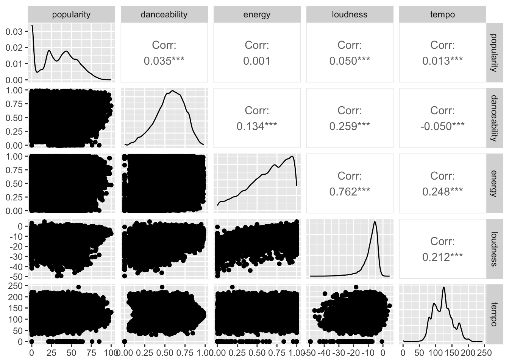
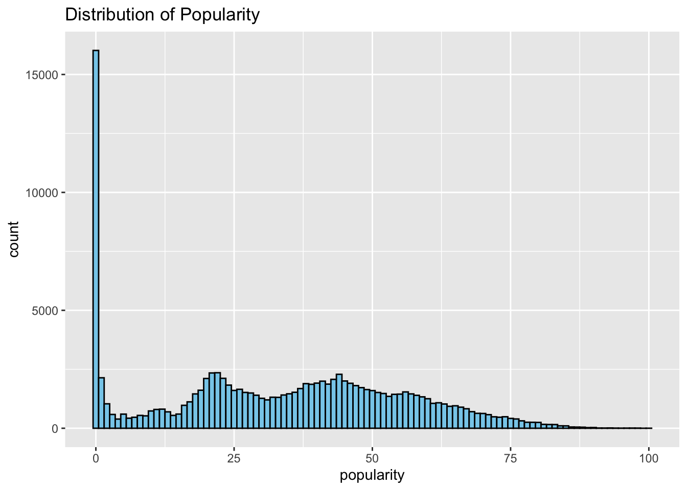
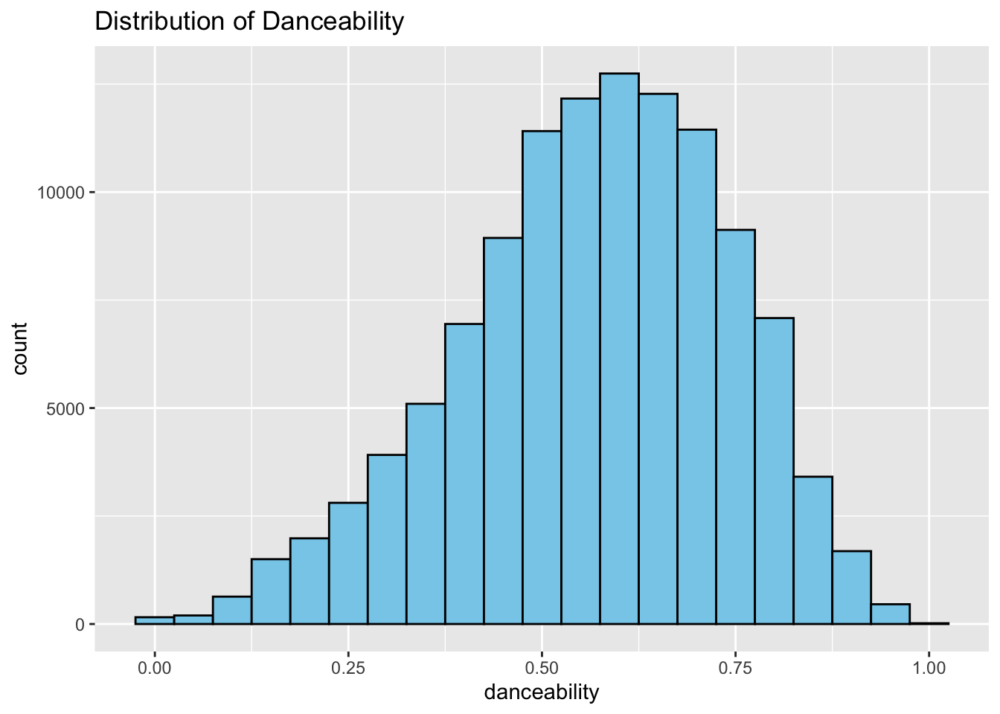
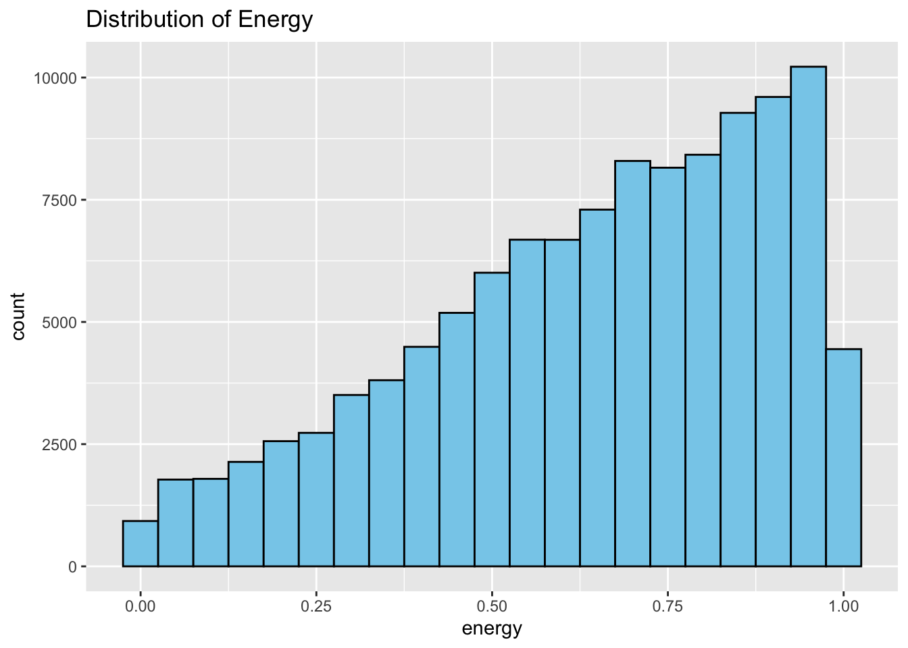
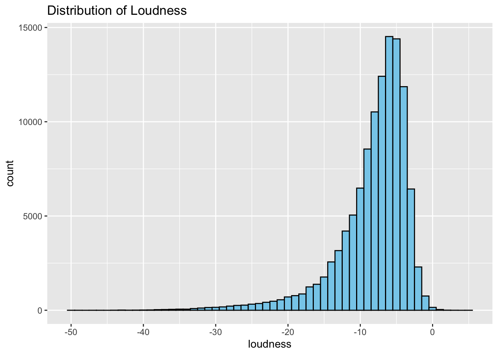
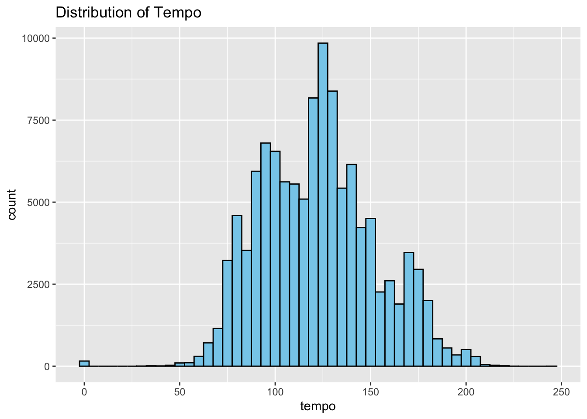
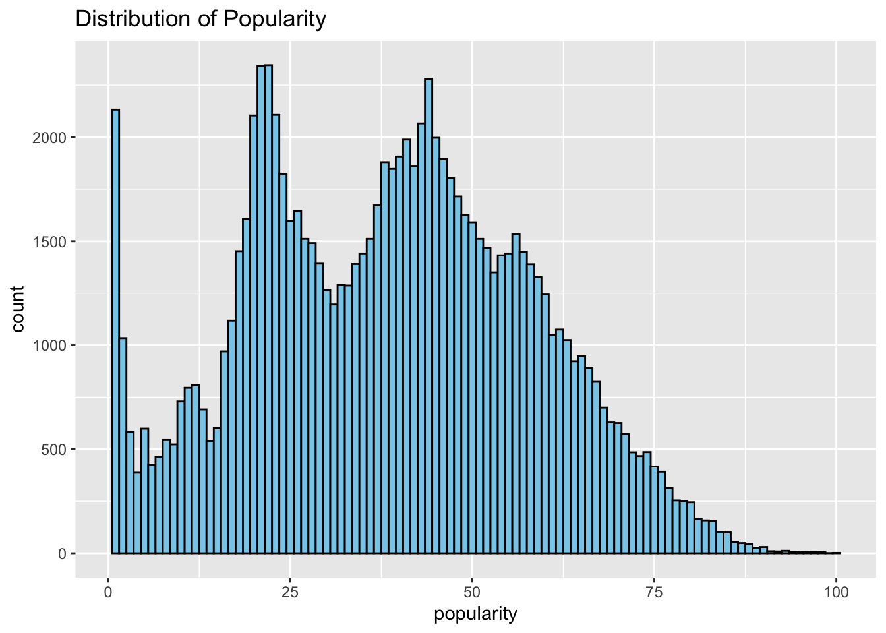
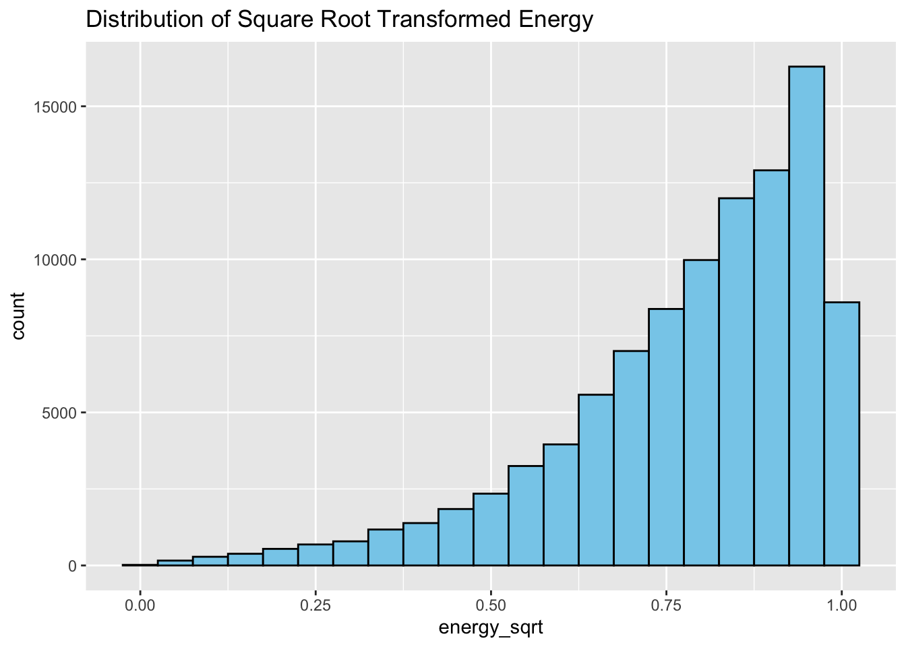
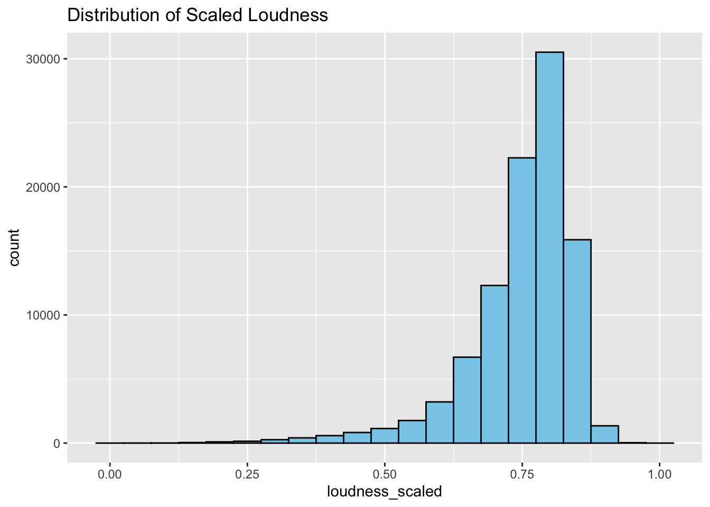
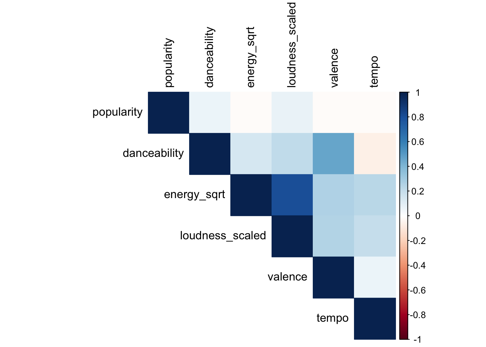

Rows: 114000 Columns: 21
── Column specification ────────────────────────────────────────────────────────
Delimiter: ","
chr (5): track_id, artists, album_name, track_name, track_genre
dbl (15): ...1, popularity, duration_ms, danceability, energy, key, loudness...
lgl (1): explicit
ℹ Use `spec()` to retrieve the full column specification for this data.
ℹ Specify the column types or set `show_col_types = FALSE` to quiet this message.
head(spotify_data)
# A tibble: 6 × 21
...1 track_id artists album_name track_name popularity duration_ms explicit
<dbl> <chr> <chr> <chr> <chr> <dbl> <dbl> <lgl>
1 0 5SuOikwiR… Gen Ho… Comedy Comedy 73 230666 FALSE
2 1 4qPNDBW1i… Ben Wo… Ghost (Ac… Ghost - A… 55 149610 FALSE
3 2 1iJBSr7s7… Ingrid… To Begin … To Begin … 57 210826 FALSE
4 3 6lfxq3CG4… Kina G… Crazy Ric… Can't Hel… 71 201933 FALSE
5 4 5vjLSffim… Chord … Hold On Hold On 82 198853 FALSE
6 5 01MVOl9Kt… Tyrone… Days I Wi… Days I Wi… 58 214240 FALSE
# ℹ 13 more variables: danceability <dbl>, energy <dbl>, key <dbl>,
# loudness <dbl>, mode <dbl>, speechiness <dbl>, acousticness <dbl>,
# instrumentalness <dbl>, liveness <dbl>, valence <dbl>, tempo <dbl>,
# time_signature <dbl>, track_genre <chr>
# Load the dataset and suppress the column type messagesspotify_data <-read_csv("/Users/hoomansabarou/Github/Capstone_Project_Rstudio/Choosing Dataset/Spotify/Spotify Track Dataset.csv", show_col_types =FALSE)
New names:
• `` -> `...1`
# Drop the `...1` column as it seems unnecessaryspotify_data <- spotify_data[ , -1]# View the structure again to confirm the changesstr(spotify_data)
# Remove rows with missing values in the specific columnsspotify_data_clean <- spotify_data %>%drop_na(artists, album_name, track_name)# Check the dataset structure again to confirmstr(spotify_data_clean)
# Load necessary libraries for visualization and correlationlibrary(GGally)
Registered S3 method overwritten by 'GGally':
method from
+.gg ggplot2
# Select the relevant columns for correlation analysisspotify_subset <- spotify_data_clean %>%select(popularity, danceability, energy, loudness, tempo)# Plot the correlation matrixggpairs(spotify_subset)

# Plot distributions for the relevant featuresggplot(spotify_data_clean, aes(x = popularity)) +geom_histogram(binwidth =1, fill ="skyblue", color ="black") +ggtitle("Distribution of Popularity")

ggplot(spotify_data_clean, aes(x = danceability)) +geom_histogram(binwidth =0.05, fill ="skyblue", color ="black") +ggtitle("Distribution of Danceability")

ggplot(spotify_data_clean, aes(x = energy)) +geom_histogram(binwidth =0.05, fill ="skyblue", color ="black") +ggtitle("Distribution of Energy")

ggplot(spotify_data_clean, aes(x = loudness)) +geom_histogram(binwidth =1, fill ="skyblue", color ="black") +ggtitle("Distribution of Loudness")

ggplot(spotify_data_clean, aes(x = tempo)) +geom_histogram(binwidth =5, fill ="skyblue", color ="black") +ggtitle("Distribution of Tempo")

# Remove rows where popularity is zerospotify_data_clean <- spotify_data_clean %>%filter(popularity >0)# Check the updated structure of the datasetstr(spotify_data_clean)
# Also, confirm the number of rows remainingnrow(spotify_data_clean)
[1] 97980
# Calculate Q1 (25th percentile) and Q3 (75th percentile) for tempoQ1 <-quantile(spotify_data_clean$tempo, 0.25)Q3 <-quantile(spotify_data_clean$tempo, 0.75)# Calculate IQRIQR_value <- Q3 - Q1# Define lower and upper bounds for outlierslower_bound <- Q1 -1.5* IQR_valueupper_bound <- Q3 +1.5* IQR_value# Filter out the rows with outlier values in the 'tempo' columnspotify_data_clean <- spotify_data_clean %>%filter(tempo >= lower_bound & tempo <= upper_bound)# Check the updated structure and number of rowsstr(spotify_data_clean)
# Plot distributions for the relevant featuresggplot(spotify_data_clean, aes(x = popularity)) +geom_histogram(binwidth =1, fill ="skyblue", color ="black") +ggtitle("Distribution of Popularity")

# Apply square root transformation to Energy (since it's positive)spotify_data_clean$energy_sqrt <-sqrt(spotify_data_clean$energy)# Check the distribution of transformed Energyggplot(spotify_data_clean, aes(x = energy_sqrt)) +geom_histogram(binwidth =0.05, fill ="skyblue", color ="black") +ggtitle("Distribution of Square Root Transformed Energy")

# Min-Max scaling for Loudnessmin_loudness <-min(spotify_data_clean$loudness)max_loudness <-max(spotify_data_clean$loudness)# Apply the transformationspotify_data_clean$loudness_scaled <- (spotify_data_clean$loudness - min_loudness) / (max_loudness - min_loudness)# Check the distribution of scaled Loudnessggplot(spotify_data_clean, aes(x = loudness_scaled)) +geom_histogram(binwidth =0.05, fill ="skyblue", color ="black") +ggtitle("Distribution of Scaled Loudness")

# Load the necessary library for cross-validationlibrary(caret)
Loading required package: lattice
Attaching package: 'caret'
The following object is masked from 'package:purrr':
lift
# Set up 10-fold cross-validationset.seed(123)train_control <-trainControl(method ="cv", number =10)# Fit a GLM model using the transformed featuresmodel_glm <-train(popularity ~ danceability + energy_sqrt + loudness_scaled + tempo, data = spotify_data_clean, method ="glm", trControl = train_control)# View the results of the cross-validationprint(model_glm)
Generalized Linear Model
97548 samples
4 predictor
No pre-processing
Resampling: Cross-Validated (10 fold)
Summary of sample sizes: 87793, 87793, 87793, 87792, 87793, 87793, ...
Resampling results:
RMSE Rsquared MAE
18.98663 0.02362847 15.63392
# Check if there are any tracks with zero popularityzero_popularity_count <-sum(spotify_data_clean$popularity ==0)zero_popularity_count
[1] 0
# Create interaction between danceability and energyspotify_data_clean$danceability_energy_interaction <- spotify_data_clean$danceability * spotify_data_clean$energy_sqrt# Bin tempo into low, medium, and highspotify_data_clean$tempo_binned <-cut(spotify_data_clean$tempo, breaks =c(-Inf, 90, 130, Inf), labels =c("low", "medium", "high"))# Bin loudness into low, medium, and highspotify_data_clean$loudness_binned <-cut(spotify_data_clean$loudness_scaled, breaks =c(-Inf, 0.3, 0.7, Inf), labels =c("low", "medium", "high"))# Convert explicit to binaryspotify_data_clean$explicit_binary <-ifelse(spotify_data_clean$explicit, 1, 0)# Check the structure to see new featuresstr(spotify_data_clean)
# Fit a GLM model using the new engineered featuresmodel_glm_new <-train(popularity ~ danceability + energy_sqrt + loudness_scaled + tempo_binned + danceability_energy_interaction + explicit_binary, data = spotify_data_clean, method ="glm", trControl = train_control)# View the results of the cross-validationprint(model_glm_new)
Generalized Linear Model
97548 samples
6 predictor
No pre-processing
Resampling: Cross-Validated (10 fold)
Summary of sample sizes: 87794, 87793, 87794, 87793, 87793, 87793, ...
Resampling results:
RMSE Rsquared MAE
18.96676 0.0257195 15.63163
# Create bins for duration (short, medium, long)spotify_data_clean$duration_bins <-cut(spotify_data_clean$duration_ms, breaks =c(-Inf, 180000, 300000, Inf), labels =c("short", "medium", "long"))# Group similar genres (for simplicity, I'm grouping based on acoustic/non-acoustic)spotify_data_clean$genre_grouped <-ifelse(grepl("acoustic", spotify_data_clean$track_genre), "acoustic", "non_acoustic")# Interaction between valence and energy (how positive and energetic the track is)spotify_data_clean$valence_energy_interaction <- spotify_data_clean$valence * spotify_data_clean$energy_sqrt# Check the structure to see new featuresstr(spotify_data_clean)
# Fit a GLM model using the new engineered featuresmodel_glm_advanced <-train(popularity ~ danceability + energy_sqrt + loudness_scaled + tempo_binned + danceability_energy_interaction + explicit_binary + duration_bins + genre_grouped + valence_energy_interaction, data = spotify_data_clean, method ="glm", trControl = train_control)# View the results of the cross-validationprint(model_glm_advanced)
Generalized Linear Model
97548 samples
9 predictor
No pre-processing
Resampling: Cross-Validated (10 fold)
Summary of sample sizes: 87794, 87792, 87793, 87793, 87794, 87794, ...
Resampling results:
RMSE Rsquared MAE
18.86469 0.03617862 15.50893
# Select numeric features and calculate correlation matrix with popularitynumeric_features <- spotify_data_clean %>%select(popularity, danceability, energy_sqrt, loudness_scaled, valence, tempo)# Correlation matrixcor_matrix <-cor(numeric_features)# Print the correlation matrixprint(cor_matrix)
corrplot(cor_matrix, method ="color", type ="upper", tl.col ="black")

# Load the randomForest librarylibrary(randomForest)
randomForest 4.7-1.2
Type rfNews() to see new features/changes/bug fixes.
Attaching package: 'randomForest'
The following object is masked from 'package:dplyr':
combine
The following object is masked from 'package:ggplot2':
margin
# Set seed for reproducibilityset.seed(123)# Fit a Random Forest modelmodel_rf <-randomForest(popularity ~ danceability + energy_sqrt + loudness_scaled + tempo_binned + danceability_energy_interaction + explicit_binary + duration_bins + genre_grouped + valence_energy_interaction, data = spotify_data_clean, importance =TRUE, ntree =500)# View model summaryprint(model_rf)
Call:
randomForest(formula = popularity ~ danceability + energy_sqrt + loudness_scaled + tempo_binned + danceability_energy_interaction + explicit_binary + duration_bins + genre_grouped + valence_energy_interaction, data = spotify_data_clean, importance = TRUE, ntree = 500)
Type of random forest: regression
Number of trees: 500
No. of variables tried at each split: 3
Mean of squared residuals: 212.8293
% Var explained: 42.35